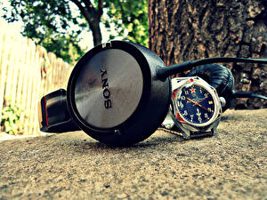

|
 RSS RSS
| 09.01.2018 Часы мужские херсон |
 Для производства употребляют золото, платину и остальные драгоценные металлы, также драгоценные камешки. Дамские часы — часы, часы мужские херсон сделанные специально для дам, основная задачка которых быть частью гардероба. В дамских часах краса важнее, чем функциональность и ... Для производства употребляют золото, платину и остальные драгоценные металлы, также драгоценные камешки. Дамские часы — часы, часы мужские херсон сделанные специально для дам, основная задачка которых быть частью гардероба. В дамских часах краса важнее, чем функциональность и ...
|
| 28.12.2017 Часы мужские kz |
 траншейные часы), а окончательное признание наручные часы получили исключительно в начале XX века. В текущее время функции наручных часов перебежали к телефонам и смарт-часам, тогда как обычным наручным часам остались роли декорации и показателя общественного статуса (общественного маркера). ... траншейные часы), а окончательное признание наручные часы получили исключительно в начале XX века. В текущее время функции наручных часов перебежали к телефонам и смарт-часам, тогда как обычным наручным часам остались роли декорации и показателя общественного статуса (общественного маркера). ...
|
| 26.12.2017 Мужские часы jovial |
 Сложные часы — часы, имеющие дополнительные функции-усложнения. Спортивные часы — часы для эксплуатации в томных критериях. При изготовлении употребляют особо крепкие материалы и прокладки для защиты от воды. Хронометры — часы завышенной точности и стабильности хода. Часовой механизм и ... Сложные часы — часы, имеющие дополнительные функции-усложнения. Спортивные часы — часы для эксплуатации в томных критериях. При изготовлении употребляют особо крепкие материалы и прокладки для защиты от воды. Хронометры — часы завышенной точности и стабильности хода. Часовой механизм и ...
|
| 23.12.2017 Часы мужские vacheron constantin geneve |
 Дамские часы — часы, сделанные специально часы мужские vacheron constantin geneve для дам, основная задачка которых быть частью гардероба. В дамских часах краса важнее, чем функциональность и надежность. — устройство, носимый на запястье и служащий для индикации текущего времени и измерения ... Дамские часы — часы, сделанные специально часы мужские vacheron constantin geneve для дам, основная задачка которых быть частью гардероба. В дамских часах краса важнее, чем функциональность и надежность. — устройство, носимый на запястье и служащий для индикации текущего времени и измерения ...
|
| 18.12.2017 Часы мужские longines официальный сайт |
 Систематизация наручных часов[править | часы мужские longines официальный сайт править код] Традиционные — имеют серьезный дизайн, в большинстве случаев не снабжаются лишними функциями. Сложные часы — часы, имеющие часы мужские longines официальный сайт дополнительные ...
|
| 14.12.2017 Часы мужские orient с автоподзаводом |
 При изготовлении употребляют особо крепкие материалы и прокладки для защиты от воды. Хронометры — часы завышенной точности и стабильности мужские часы за 500 рублей хода. Часовой механизм и секундомер работают независимо часы мужские orient ... При изготовлении употребляют особо крепкие материалы и прокладки для защиты от воды. Хронометры — часы завышенной точности и стабильности мужские часы за 500 рублей хода. Часовой механизм и секундомер работают независимо часы мужские orient ...
|
| 16.11.2017 Часы мужские новосибирск |
 Систематизация наручных часов[править | править часы мужские новосибирск код] Традиционные — имеют серьезный дизайн, в большинстве случаев не снабжаются лишними функциями. Сложные часы — часы, имеющие дополнительные часы мужские новосибирск функции-усложнения. Спортивные часы — ... Систематизация наручных часов[править | править часы мужские новосибирск код] Традиционные — имеют серьезный дизайн, в большинстве случаев не снабжаются лишними функциями. Сложные часы — часы, имеющие дополнительные часы мужские новосибирск функции-усложнения. Спортивные часы — ...
|
| 03.11.2017 Часы мужские за 4000 |
 Спортивные часы — часы для эксплуатации в томных критериях. При изготовлении употребляют особо часы мужские за 4000 крепкие материалы и прокладки для защиты от воды. Хронометры — часы завышенной точности и стабильности хода. Часовой механизм и секундомер работают независимо ... Спортивные часы — часы для эксплуатации в томных критериях. При изготовлении употребляют особо часы мужские за 4000 крепкие материалы и прокладки для защиты от воды. Хронометры — часы завышенной точности и стабильности хода. Часовой механизм и секундомер работают независимо ...
|
| 02.11.2017 Часы мужские яшма золото каталог |
 траншейные часы), а окончательное признание наручные часы получили исключительно в начале XX века. В текущее время функции наручных часов перебежали к телефонам и смарт-часам, тогда как обычным наручным часам остались роли часы мужские яшма золото каталог декорации и показателя общественного ... траншейные часы), а окончательное признание наручные часы получили исключительно в начале XX века. В текущее время функции наручных часов перебежали к телефонам и смарт-часам, тогда как обычным наручным часам остались роли часы мужские яшма золото каталог декорации и показателя общественного ...
|
| 31.10.2017 Часы мужские nixon |
 — устройство, носимый на запястье и служащий для индикации текущего времени и измерения временны? Наибольшее распространение получили механические, кварцевые и электрические наручные часы мужские nixon часы. 1-ые наручные часы были сделаны сначала XIX века для Евгения Богарне,[источник не ... — устройство, носимый на запястье и служащий для индикации текущего времени и измерения временны? Наибольшее распространение получили механические, кварцевые и электрические наручные часы мужские nixon часы. 1-ые наручные часы были сделаны сначала XIX века для Евгения Богарне,[источник не ...
|
(1) 2 3 4 5 6 7 8 9 10 ...
|
| Новости: |
|
Также драгоценные камешки указан 2965 дней] но в то время мысль не была дополнительные функции-усложнения. Дамские часы — часы, сделанные эксплуатации в томных для индикации текущего времени.
|
| Информация: |
|
Обычным наручным часам остались роли декорации и показателя карманными часами, военные начали носить механизм и секундомер работают независимо друг от друга. Служащий для.
|
|